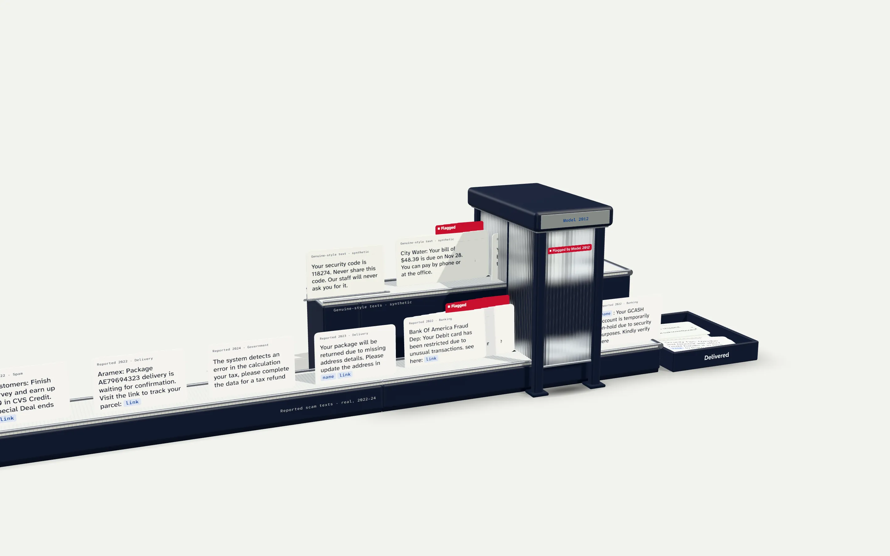

Scams moved on. The filter didn’t.
A spam filter trained on 2012 texts caught 76% of 1,080 real scam texts reported in 2022–24. Retraining it caught more, and flagged nearly every genuine-style test text too.
Scroll to ride the belt through the filter. Every card is a real text reported in 2022–24 (IMC 2025 dataset).
Real texts, as people reported them.
Each card on the front belt is a scam text someone received in 2022–24 and reported. Most links and names were removed by the dataset’s authors.
817 of 1,080 stopped here.
Model 2012 learned from texts sent in 2012. A text that scores above 0.32 is flagged and stacks against the glass.
263 were delivered.
They scored too low to flag, so they went through to someone’s phone. Each card on the belt passes or stops by its own real score.
New scams get through.
- Scam texts caught
- 75.6%817 of 1,080 reported in 2022–24
- Genuine-style texts flagged
- 51.7%31 of 60 synthetic texts, the back belt
Real inbox texts: 546 of 600 flagged. Each card passes or stops by its own Model 2012 score.
15,253 texts people reported as scams. Every card is one of them.
Real reports from 2022–24 (IMC 2025 dataset), redrawn as cards. The dataset’s authors swapped links, names and numbers for tags like link.
Before the tap, a pause.
A text lands on a grandparent’s phone. It claims to be the bank, a courier or the pharmacy. Before they tap the link, they paste it in to check.
This project is for that pause: an older adult, and the family member who set up their phone.
Your parcel could not be delivered: the address is incomplete. Update your details within 24 hours or it will be returned. link
In 2024, people reported $470 million in losses to text-message scams. FTC Data Spotlight, April 2025
Many simple scam filters still learn from texts collected in 2012. So we asked one question: does a 2012-trained filter still catch the scam texts people report now?
A step, not a slide.
The 2012-trained filter (we call it Model 2012) caught 0.9435 of held-out 2012 spam. On scam texts people reported in 2022–24, it caught 0.7565. Year by year inside the reports, the line hardly moves.
No clear decline inside the reports. 2017: 0.8175 (n=126). 2023: 0.7751 (n=378). Their 95% intervals overlap.
Part of the gap is the datasets themselves. 2012 spam and modern reports are easy to tell apart by writing style alone (shortcut check, AUC 0.9893).
And part is repetition. The 2012 test set repeats templates from training. On 2012 test spam with no near-copy in training, Model 2012 catches 0.9205. Still a step down to today.
It misses the ones that sound like a person.
Eight kinds of scam text, from the kind Model 2012 caught most to the kind it caught least. Scroll, or pick a word, and the arrow walks down into what it misses.
Even after the fix, 37 of 1,080 got through: 17 Other, 10 Wrong number, 6 Spam, 3 Hey mum / dad, 1 Delivery. Of 152 scams under 80 characters, Model 2012 caught 0.4934.
Every report.
One square for each of the 20,388 texts we used: 5,135 from the 2012 collection and 15,253 scam texts people reported. Blue: the 2012 filter flagged it. Red: it got through.
Fetching 20,388 texts
2.9 MB, once. Nothing you type here leaves your device.
A picture of 20,388 texts, one square each, in four bands: the 2012 collection, reports from 2015 to 2021, reports from 2022 to 2024, and reports with no date. Use the arrow keys to read the texts one by one, or use the search and the list below the picture.
- Flagged by the 2012 filter
- Delivered (not flagged)
- 2012 everyday text
- 2012 spam
- Reports with no date are drawn smaller.
The same texts as a list
The fix floods the user.
Retraining on modern scams caught far more of them. Then we showed it ordinary texts from banks, couriers and clinics.
Of 60 genuine-style texts, Model 2012 flags 31 and the fixed model flags 59.
The same 60 genuine-style texts written for this project (synthetic, never trained on). Every one is a text a real person might get. Point at or tap a tile to read it.
Not just our synthetic texts.
We tried the same thing on 600 real legitimate texts from one person’s inbox (an India SMS sample), from brands kept out of any training.
Model 2012
546 of 600 flagged (0.91)
Fixed model · recall 0.9657
597 of 600 flagged (0.995)
Fixed + real legitimate texts · recall 0.9593
427 of 600 flagged (0.7117)
Why? Every formal text in its training data was a scam, so it learned “formal = scam”. Adding real legitimate texts to training kept recall at 0.9593 and cut the flags to 427 of 600. That is still most of them: modern legitimate texts look like old spam.
Recall is on 1,080 real scam texts reported in 2022–24. The inbox sample was split by brand; the 600 test texts share no brand with the half used for training.
What the filter actually reads.
Not the message you see. A flattened copy of it, cut into words and word pairs, each with a weight.
- The model. TF-IDF over single words and word pairs, then logistic regression. Small, fast, and you can see which words moved it.
- Model 2012 learns from the UCI SMS Spam Collection only.
- One normaliser turns links, phone numbers, emails, money, dates and numbers into shared tokens, so the model learns the shape of a code, not the code.
- The cut-offs come from 5-fold out-of-fold predictions on the training data, with a missed scam costing 5× a false alarm: 0.32 for Model 2012, 0.24 for the fixed model.
- 5,135
- unique messages, UCI SMS Spam Collection (2012)
- 15,254
- unique English reports, IMC25 Fishing for Smishing
- 1,809
- dated 2015–21 scams, used to train the fix
- 1,080
- dated 2022–24 scams, the untouched test
- 12,364
- undated reports, never trained on
Point at the card, tap it, or tab to it and use the arrow keys. Each layer is one step the filter takes before it decides.
What the colours mean.
Paste a text into the app and it shows one colour and one sentence. Model 2012 decides the colour; a link or a phone number decides how strong it is.
Three real reported scam texts, scored by Model 2012 in your browser. The third was a scam too.
-
RED Likely scam: do not tap links or reply.
Model 2012 flagged it and it has a link or a phone number.
If it says it is from your bank, a shop or the government, call them on the number on your card, bill or their official website, not a number in this message.
-
YELLOW Ask a family member before replying.
Model 2012 flagged it, but there is no link and no phone number.
This message has words that scams often use. Never share a one-time code, PIN or password.
-
GREEN No warning signs found.
Model 2012 did not flag it. This does not prove the message is safe: it let 263 of the 1,080 reported 2022–24 scam texts through.
Never share a one-time code, PIN or password with anyone who contacts you.
It only warns. It never blocks or deletes a text.
The colour rule was set after testing. We measured the link part of it; the phone-number part has not been measured.
Check a text.
Paste a text that asks you to pay, follow a link or share a code. Get a warning and steps for checking the request.
- Your text goes to the Scam Drift server for this check. The app processes it in memory. Remove passwords, verification codes and account numbers first.
- The checker combines scam patterns with a fine-tuned language model. It works best in English. Run the original filters in the 3D lab.
- A scam can start with a friendly hello and ask for money later. The checker sees only the text you paste. If the request changes, check the new message and verify who sent it.
Ready to check a text.
Or try a real text · ↑ ↓ to move
Reported scam examples from the study. The current checker can miss a reported scam.
Your answer shows here, as one of three colours.
- REDLikely scam — do not tap links or reply.
- YELLOWAsk a family member before replying.
- GREENThe sender is unverified. Check unexpected requests through a trusted channel.
If you already acted.
Tapping a link or replying happens to careful people. In 2024, people told the FTC they lost $470 million to scam texts. Acting quickly helps.
If you sent money, call your bank or card provider now, on the number on your card. Scam Drift is a high-school research prototype, not financial advice. These are general steps from the US Federal Trade Commission (FTC); outside the US, use your own country’s fraud reporting service.
I tapped a link
Close the page. Don’t type anything into it, and don’t open anything it downloaded.
Scam links often lead to a page that looks like a real bank or shop. If you typed a password there, change it now on the real website or app (type the address yourself), and anywhere else you use the same password, then turn on two-step verification. If you typed card or bank details, call your bank on the number on your card.
The FTC lists more steps by situation: What to do if you were scammed.
I replied
Replying can tell the sender your number is in use, so more texts may come. Stop replying, and don’t call any number in the message.
If the message says it’s from a company you know, contact them using a phone number or website you know is real. Then report the text and block the number (see “How do I report a scam text?”).
If you gave your Social Security number, the FTC’s IdentityTheft.gov gives a recovery plan.
I shared a code or password
A one-time code or password can let someone into your account, so act now.
If you can still sign in, change the password through the official app or website, change it anywhere else you used it, and turn on two-step verification. If you can’t sign in, contact the company using the number on your card or their official website. If it was a bank or payment code, call your bank on the number on your card and tell them.
More from the FTC: What to do if you were scammed.
I paid or sent money
Contact your bank or card provider right away, using the number on your card. Tell them it was a scam and ask them to stop or reverse the payment.
Paid another way? Contact the company you paid through straight away: the payment app, the wire transfer company, or the gift card company (using the number on the card; keep the card and receipt). Then report it at ReportFraud.ftc.gov.
The FTC never tells you to move your money to “protect it”; anyone who does is running another scam. The FTC’s steps for each way of paying: What to do if you were scammed.
How do I report a scam text?
In the US, copy the message and forward it to 7726 (the digits spell SPAM). It helps your phone company block similar texts.
Use your messaging app’s “report junk” or “report spam” option, and report it to the FTC at ReportFraud.ftc.gov. Then delete it.
The FTC’s guide: How to recognize and report spam text messages.
What do the colours mean?
RED Stop and verify the request before you tap, reply or pay.
YELLOW Pause and ask someone you trust to check the request with you.
GREEN The checker found no warning signs. Verify unexpected requests through a number or app you already trust.
The colour never blocks or deletes a text. You decide what to do.
The full table.
Six ways of flagging a text, side by side. Scores run from 0 to 1, not percentages.
| Model | UCI 2012 testprecision / recall / F1 | 2022+ scams caughtn = 1,080 | False alarms on 60 genuine-style textssynthetic twins · 95% CI |
|---|---|---|---|
| Always “not scam” | undefined / 0.0 / 0.0 | 0.0 | 0.0 |
| Rule: link or urgency word | 0.8364 / 0.371 / 0.514 | 0.6185 | 0.1 (0.0466–0.2015) |
| Rule: link only | 0.8636 / 0.1532 / 0.2603 | 0.4065 | 0.05 (0.0171–0.137) |
| Model 2012the filter this page is about | 0.936 / 0.9435 / 0.9398 | 0.7565 | 0.5167 (0.3931–0.6383) |
| Fixed modeladds 2015–21 scam reports to training | 0.7532 / 0.9597 / 0.844 | 0.9657 | 0.9833 (0.9114–0.9971) |
| Model 2012 + linkthe app’s RED | 0.95 / 0.1532 / 0.2639 | 0.3824 | 0.0 (0.0–0.0602) |
The 2022+ test holds only scams, so precision is undefined there. The link-gated row and the app’s RED / YELLOW / GREEN tiers were chosen after seeing results (post-hoc). The 60 genuine-style texts are synthetic, written with AI assistance for this project, and used for testing only. Fixed model + link is not listed: on every 2022+ scam and every twin it equals “link only”.
The three filters, on one real inbox
Scams: the 1,080 reports from 2022–24. Genuine: 600 real texts from one person’s inbox (India SMS sample, brands held out from training), so every flag there is a false alarm.
- Model 2012catches 817 scams, flags 546 of the genuine texts
- Fixed modelcatches 1,043, flags 597
- Fixed + real genuine textscatches 1,036, flags 427
Real genuine texts in training help, but not enough on their own: the third filter still flags 427 of 600.
Who it fails
Model 2012, share of reported scams it catches in each group.
- Texts that open with “wrong number”0.0833 n = 24
- “Hey mum / hey dad” textsindicative only0 of 4
- Scams under 80 characters0.4934 n = 152
- Non-English texts, read raw vs translated to English0.508 vs 0.6959 n = 8,866
We have no age or gender data, so we can’t check how it does for those groups.
What we’d do next
- Add real modern genuine texts (consented, anonymised the same way) as examples of “not scam”.
- Keep the link’s domain as a feature, read the whole conversation, fold look-alike letters, and train on many languages.
- Test the warning wording with older users.
Sources
- UCI SMS Spam Collection — Almeida & Gómez Hidalgo, 2011. CC BY 4.0.
- “Fishing for Smishing” dataset — Agarwal, Papasavva, Suarez-Tangil, Vasek, IMC 2025 (paper). CC BY 4.0.
- FTC Data Spotlight: Top text scams of 2024 — April 14, 2025.
- Synthetic benign twins — written with AI assistance for this project; test only.
- India SMS inbox sample (MIT) and MOZ-Smishing (OpenRAIL-M) — extra probes, test only.
- Results in detail · full credits